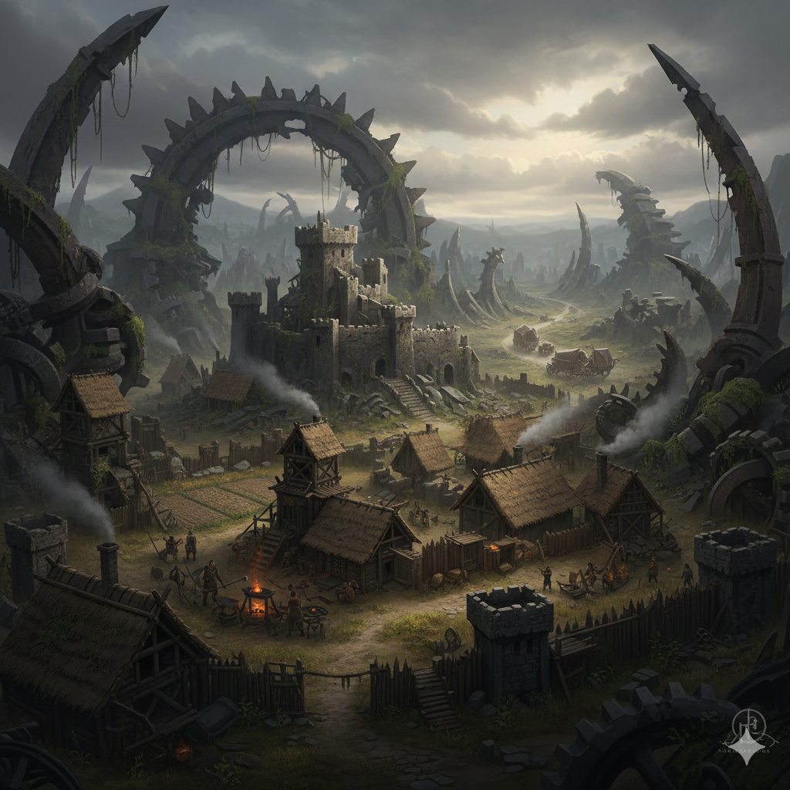
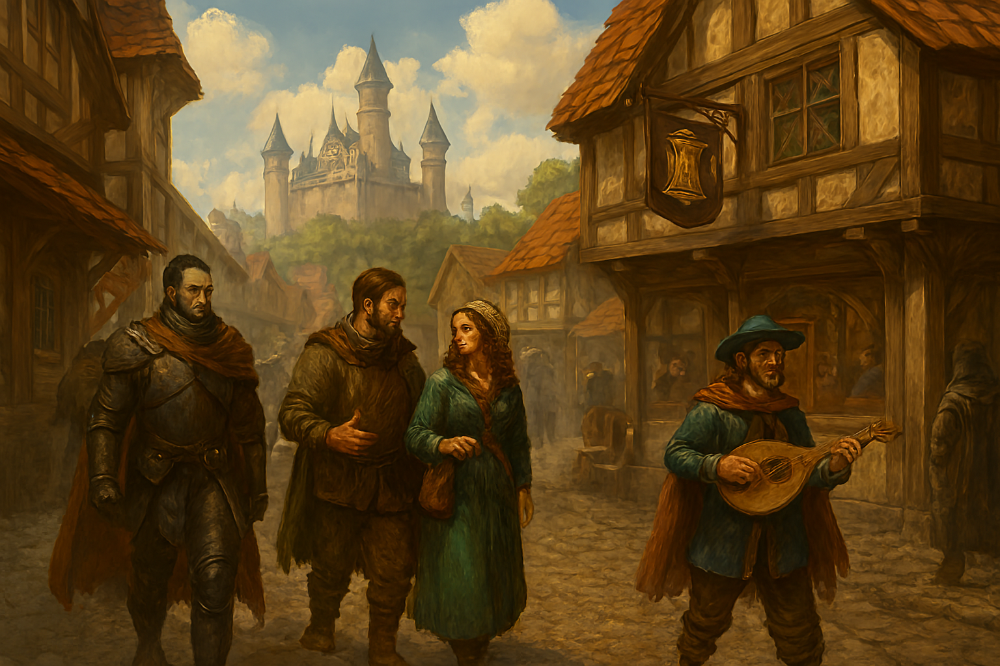
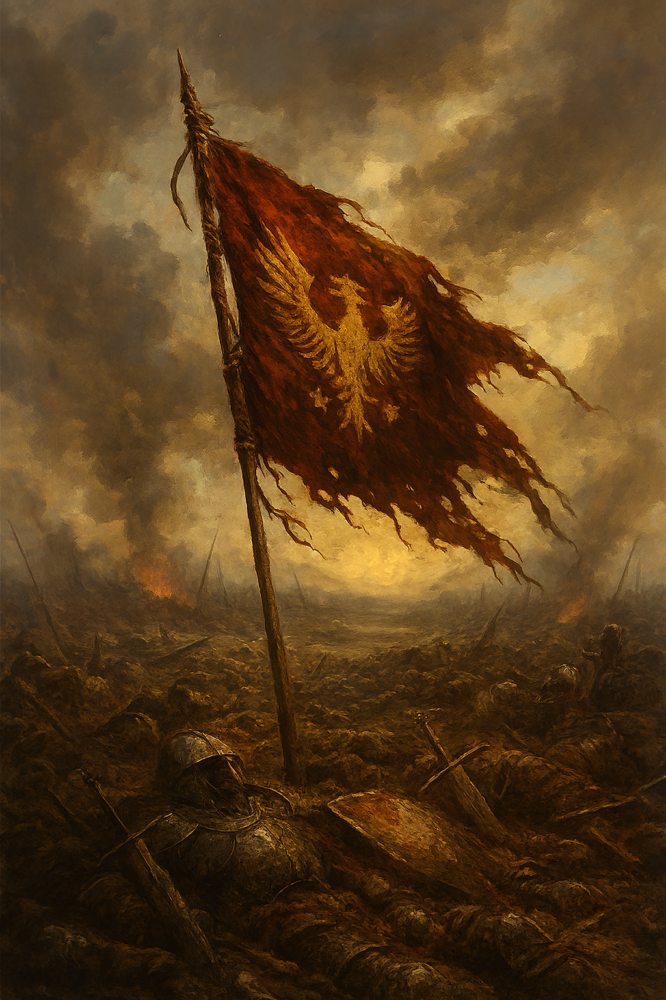
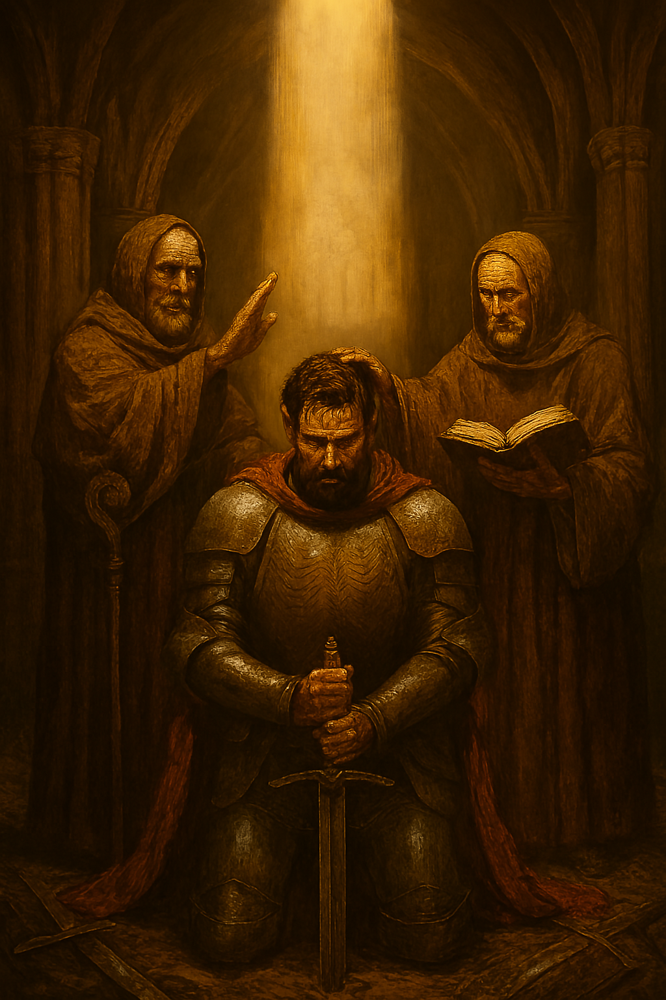
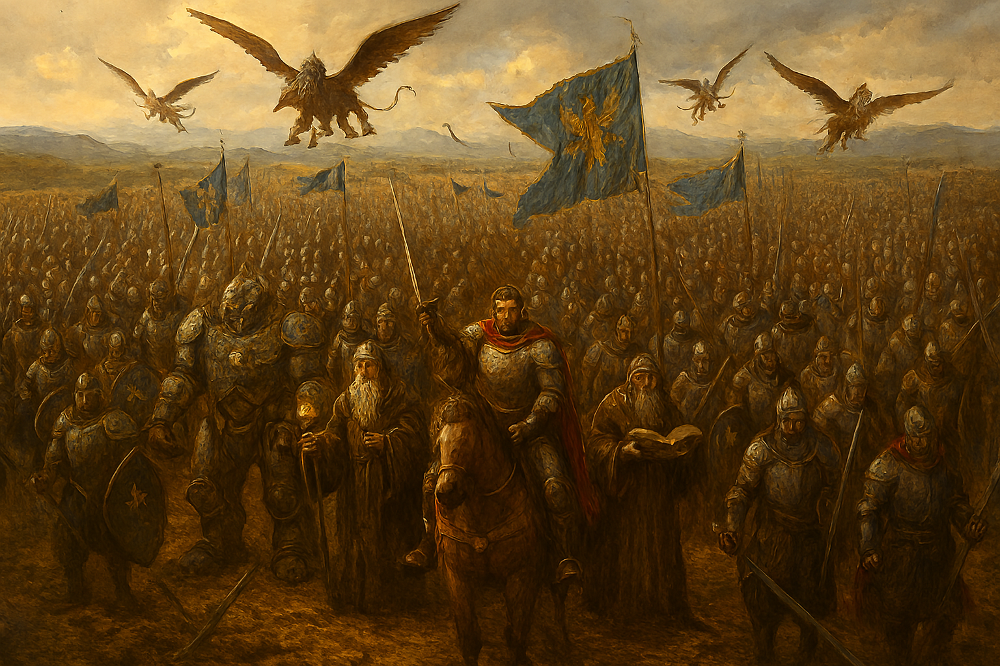

You have chosen Humans

Origin
Humanity emerged amid the ruins of the Age of Iron, an era remembered for endless conflict, fallen empires, and the near-extinction of civilization itself. They arrived in Eldora as survivors of a world that no longer exists — whether that lost realm was steeped in sorcery, stripped of magic, or something beyond current understanding remains uncertain. Records conflict, ancient texts contradict one another, and even the gods offer no clarity.
Unlike the elder races, humans inherited neither ancient magic nor indestructible forms. What they possessed instead was adaptability. They scavenged shattered cities, learned from defeat, and rebuilt where others would abandon hope. From fractured tribes and warbands arose the first human kingdoms, forged not by prophecy or destiny, but by necessity. Whatever destroyed their original world was powerful enough to erase it entirely — and yet humanity endured, proving that survival itself can become the foundation of greatness.

Culture and Way of Life
Human society is defined by motion and ambition. Where elder races build for eternity, humans build for change—raising cities atop old ruins, carving trade routes across continents, and redrawing borders with each generation. Innovation is survival, and stagnation is decay. Lacking innate magic or immortal bodies, humans magnify their strength through organization: guilds to master crafts, armies to impose order, religious orders to unify belief, and political alliances to project power. Leadership is fiercely valued, and even those of humble birth may rise through merit, cunning, or sheer will.
Culturally, humanity is fragmented yet dynamic. Some kingdoms prize honor, tradition, and lineage; others reward progress, ambition, and adaptability. Customs evolve quickly, absorbing and reshaping influences from allies and rivals alike. Beneath this diversity lies a shared awareness of time—human lives are brief, and their achievements fragile. As a result, humans measure worth by legacy rather than longevity. This urgency fuels their greatest wonders and their bloodiest wars, driving them to shape Eldora not because they must, but because they fear being forgotten.

Strengths and Weaknesses
Humanity’s greatest strength lies in versatility. Humans adapt faster than any other race, mastering new weapons, magics, and tactics with remarkable speed. They excel at cooperation, forming complex societies where warriors, scholars, artisans, and mystics support one another. When faced with defeat, humans rarely collapse; instead, they learn, reorganize, and return stronger. Their resilience allows them to survive disasters that would end more rigid civilizations, and their ability to blend martial skill, magic, and innovation makes them dangerously unpredictable.
Yet these strengths are tempered by profound weaknesses. Human lifespans are short, and the pressure of limited time often breeds impatience and reckless ambition. Pride drives them to overreach—waging wars they cannot finish or pursuing power they cannot control. Internal division is another flaw: humans fracture easily along political, religious, and cultural lines, sometimes destroying themselves faster than any external enemy could. Where elder races endure through caution and memory, humans gamble on tomorrow, often paying for their mistakes in blood.

Beliefs
Human belief systems are as diverse as their nations, but most share a common thread: meaning must be created, not inherited. Some place their faith in gods and divine order, seeking protection, guidance, or purpose beyond mortality. Others believe destiny is forged through action alone, revering heroes, ancestors, and the legacies of great deeds rather than distant deities. Even skeptics and philosophers, who reject the divine entirely, often cling to ideals such as honor, duty, or progress as substitutes for faith.
Because their origins are uncertain and their future fragile, humans cling fiercely to belief. Faith gives structure to chaos, while ideology justifies conquest, unity, or rebellion. Temples stand beside academies, and holy wars have been fought as often as philosophical revolutions. For humans, belief is not passive—it is a tool to endure fear, justify sacrifice, and convince themselves that their brief lives matter in a vast and indifferent world.

Battle Style
Human warfare is defined by discipline, coordination, and ingenuity. Rather than relying on overwhelming strength or ancient magic, human armies favor mixed formations—armored infantry holding the line, archers and artillery breaking enemy ranks, cavalry exploiting weaknesses, and mages supporting from behind. Command structures are rigid but flexible, allowing generals to adapt strategies mid-battle. Siegecraft, fortifications, and supply lines are as important to humans as the clash of steel itself.
On the battlefield, humans excel at prolonged conflict. They prepare, adapt, and learn from each engagement, refining tactics with brutal efficiency. Where other races may rely on tradition or instinct, humans innovate—deploying new weapons, unconventional strategies, and desperate gambits when victory seems impossible. Their wars are rarely graceful, but they are effective. Human armies may lack the raw power of elder races, but they win through planning, sacrifice, and the relentless belief that defeat is not an option.
Where Will Your Journey Begin?
Each land holds its own stories, dangers, and opportunities
Origin Traits